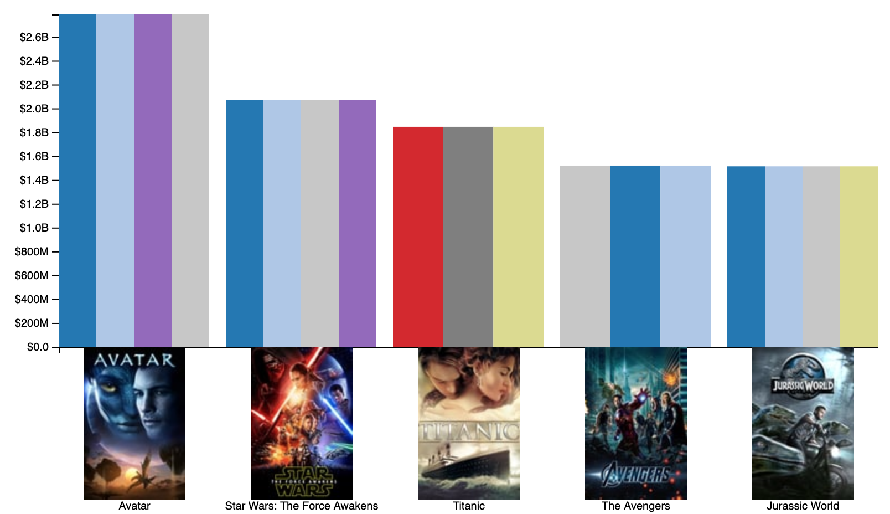
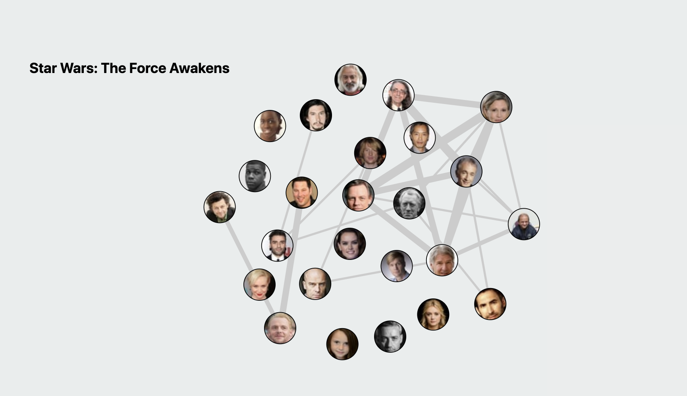
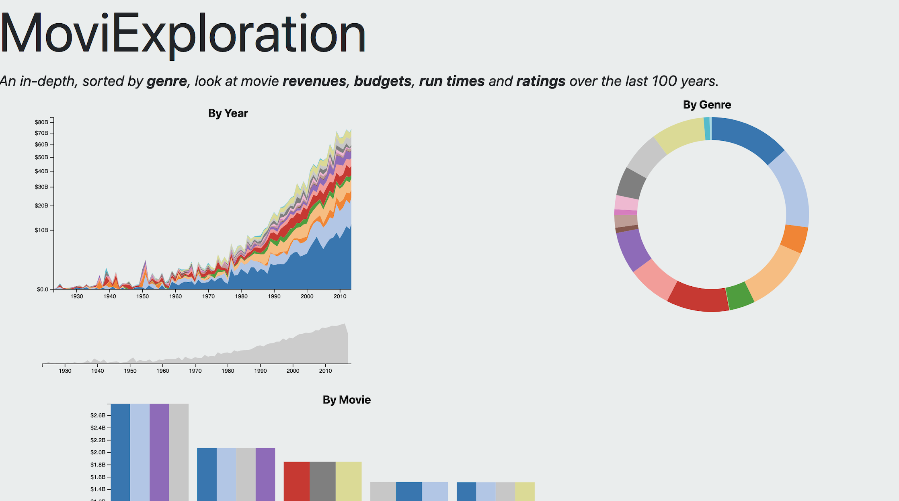

Project Title: MoviExploration
Myles Novick | myles.novick@wustl.edu | 444987
Noah Saldaña | saldanan@wustl.edu | 450041
Repository Link: https://github.com/myles-novick/MoviExploration
We’re both very big into movies and in the past have taken computer science classes where we utilized a movie database to create an app. After talking about what our group wanted to do, we both settled on creating a visualization centered around genres and actors.
We want to be able to visualize various descriptive statistics about the history of the movie industry. Specifically, we would like our visualization to answer the following questions:
The dataset we found is very fragmented and thus will require some cleanup. Specifically, for each movie, we will need to record the release year, genre, revenue, actors, and maybe directors. For each actor, we will need all movies they have appeared in and their roles in said movies.
Throughout the course of the project we will meet on Saturdays. In week 10 we will work together to finalize our idea and scope out some potential data sources. In week 11 we will wrangle the data we scoped out in week 10 and manipulate the data to fit our design. In week 12 we will use the data to create a prototype. In week 13 we will ensure that all functionality is implemented. In week 14 we will clean up our project and make it visually appealing. In week 15 we will prepare our presentation.
So far, our progress mirrors our sketches pretty well. One update we have made is deciding to color the bar charts by genre, and added posters to the axis:
At our second milestone, we continued to improve the initial functionality of our prototype but continued down our checklist of items we wanted included. This began with a force graph of actors and their relations to other actors.
After this, we chose to revamp parts of the initial website and to make more definitive labels.
